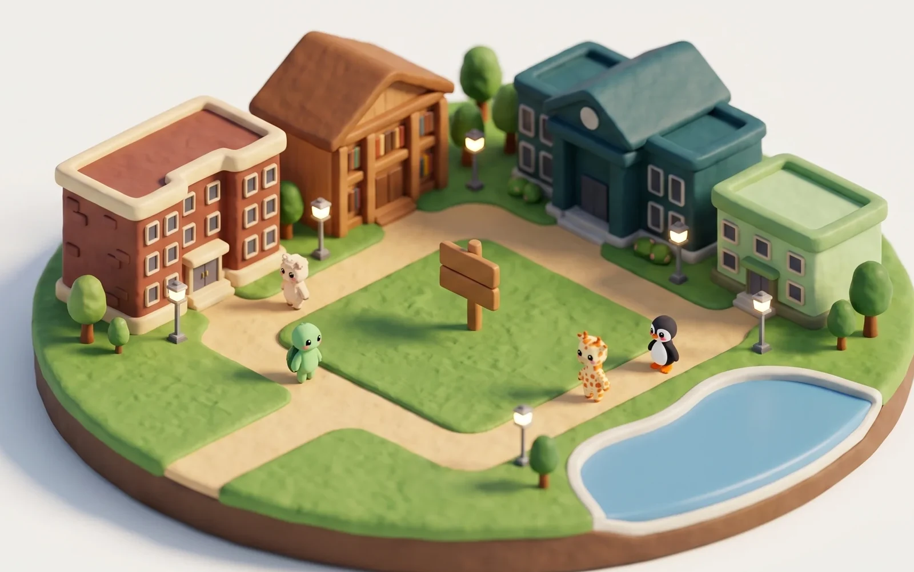
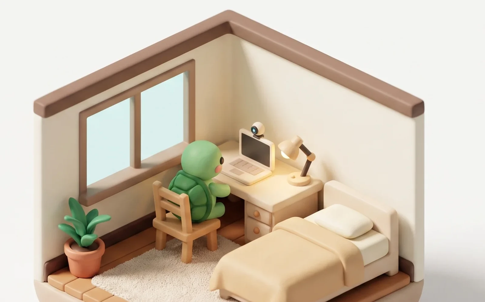

Deskfit
세션 시작
마이페이지
랭킹전

온라인

비공개
시작하기
돌아가기
비공개방
방 만들기
방 이름과 인원을 정해요
초대 코드로 입장
받은 코드 6자리를 입력해요
방 이름
인원
4명
이 방으로 시작
초대 코드
입장하기
돌아가기
초대 코드
4F2K9A
코드 복사
지금 방에 있는 사람
3 / 6
좋음
나
● 느긋한거북
밤샘펭귄
세션 시작
나가기
방 설정
방 제목
자료구조 3장
함께 앉을 시간
50분
10분
120분
자리 수
6명
마이크
카메라
녹음
23분 집중
나가기
● 한지우
● 느긋한거북
밤샘펭귄
● 개구리
마이크
카메라
녹음
내 기기에서만
나
자세 좋아요
18분째 유지 중
좋음
주의
무너짐
오늘 목표까지
27분
3회
회복
C
18
코인
오늘의 집중을 마쳤어요
50
분
연속 9일째
4회
회복
C
35
코인
이번 주 앉은 시간
4시간 20분
월
화
수
목
금
토
오늘
AI 리포트 확인
재시작
메인으로
마이페이지
내 정보
자세 기준
AI 회고
DESKFIT
CAMPUS CARD
2026
서지우
느긋한거북
명지대학교 · 디지털콘텐츠디자인학과
3학년 · 60221008
학교 인증 완료
시즌 회고
오늘 집중
46
분
진행한 세션
3
회
자세 회복
12
회
연속 출석
9
일
C
가진 코인
340
시즌
26
일째
집중 세션 시작
마이페이지
내 정보
자세 기준
AI 회고
DESKFIT
CAMPUS CARD
2026
느긋한거북
인증하면 카드가 채워져요
학교 인증하기
시즌 회고
오늘 집중
46
분
진행한 세션
3
회
자세 회복
12
회
연속 출석
9
일
C
가진 코인
340
시즌
26
일째
집중 세션 시작
1 / 2
학교 이메일
hong@mju.ac.kr
명지대학교
ac.kr 로 끝나는 주소만 받아요. 비밀번호는 만들지 않아요.
인증 메일 받기
그만두기
메일로 받은 번호를 적어 주세요
hong@mju.ac.kr 으로 보냈어요.
2 / 2
인증번호 8자리
3
9
4
1
7
4분 32초 뒤에 만료돼요
메일 다시 받기
인증하기
주소 다시 입력
공개 설정
내 정보 · 아래쪽
프로필 공개 범위
전체 공개
같은 학교만
비공개
학교명 공개
랭킹전에 올라가려면 켜져 있어야 해요
학과 공개
끄면 카드에서 학과 줄이 사라져요
활동 기록 공개
앉은 시간과 회복 횟수를 남에게 보여 줄지
남에게 이렇게 보여요
DESKFIT
CAMPUS CARD
2026
느긋한거북
명지대학교
학과 · 활동 기록은 숨김
비공개로 두면 랭킹전에는 학교 이름만 올라가고, 카드는 아무에게도 보이지 않아요.
마이페이지
내 정보
자세 기준
AI 회고
잡아 둔 기준
10
평소처럼 앉아 계세요
귀
어깨
내 기기에서만
기준 재설정
기준 삭제
이렇게 봐요
귀와 어깨 위치만 봐요
무너지면 3초 뒤 알려줘요
돌아오면 회복 한 번이에요
책상이나 의자를 바꾸면 다시 잡아 주세요
영상은 이 기기를 떠나지 않아요
마이페이지
내 정보
자세 기준
AI 회고
잡아 둔 기준
아직 안 잡았어요
10
평소처럼 앉아 계세요
아직 기준을 안 잡았어요
10초만 평소처럼 앉아 계시면 돼요
기준 잡기
이렇게 봐요
귀와 어깨 위치만 봐요
무너지면 3초 뒤 알려줘요
돌아오면 회복 한 번이에요
기준을 잡기 전까지는 알려 주지 않아요
영상은 이 기기를 떠나지 않아요
마이페이지
내 정보
자세 기준
AI 회고
이번 주 앉은 시간
4시간 12분
지난주보다 38분
22분
월
46분
화
14분
수
58분
목
32분
금
1시간 12분
토 · 오늘
일
세션
7회
회복
21회
하루 평균
36분
세션 기록
8월 26일
오후 2:10
46분
회복 4회
AI 리포트 발급
8월 25일
오후 9:32
52분
회복 3회
회고 보기
8월 24일
오전 11:05
38분
회복 6회
회고 보기
8월 23일
오후 4:48
1시간 12분
회복 5회
회고 보기
회고를 누른 세션의 숫자만 서버로 가요
마이페이지
내 정보
자세 기준
AI 회고
아직 기록이 없어요
세션을 한 번 마치면 여기에 쌓여요
집중 세션 시작
DESKFIT
AI REPORT
46분 집중
회복 4회
느긋한거북 · 명지대학교
이번 주
4시간 12분 · 7세션
가장 오래 앉은 날
토요일 1시간 12분
오늘의 집중을 남길까요
왼쪽 그림 그대로 4:5 한 규격으로 저장돼요
카드에 넣을 것
앉은 시간
자세 회복 횟수
학교와 닉네임
AI 리포트 발급
앉은 시간과 회복 횟수만 보내요. 영상은 가지 않아요.
리포트 발급받기
PDF
HTML
학교 랭킹전
주간
누적
시즌 종료까지 4일 18시간
이번 주 집중 시간
10분 전 갱신
1
유지
가천대학교
4시간 42분
2
1
한양대학교
4시간 28분
1위까지 14분
3
2
명지대학교
3시간 26분
1위까지 1시간 16분
명지대학교
내가 채운
84분
집중해서 순위 올리기
학교 랭킹전
주간
누적
시즌 종료까지 4일 18시간
시즌 누적 집중 시간
10분 전 갱신
1위
가천대학교
41시간 12분
2위
1
한양대학교
38시간 40분
3위
2
명지대학교
29시간 55분
명지대학교
내가 채운
9시간 20분
집중해서 순위 올리기
학교 랭킹전
주간
누적
시즌 종료까지 4일 18시간
이번 주 집중 시간
10분 전 갱신
1
유지
가천대학교
4시간 42분
2
1
한양대학교
4시간 28분
1위까지 14분
3
2
세종대학교
4시간 11분
1위까지 31분
세종
명지대학교
내가 채운
84분
집중해서 순위 올리기
학교 랭킹전
순위를 불러오는 중
이번 주 순위를 불러오고 있어요
학교 랭킹전
가을 시즌 오늘 시작
?
아직 아무 학교도 안 앉았어요
지금 한 번 앉으면 우리 학교가 첫 줄에 올라가요
명지대학교
내가 채운
0분
첫 줄에 이름 올리기
학교 랭킹전
연결이 끊겼어요
순위를 불러오지 못했어요
연결을 확인하고 다시 불러와 주세요. 내 기록은 안전해요.
다시 불러오기
가을 시즌 최종 순위
최종
시즌 전체
시즌 종료 · 겨울 시즌 3일 뒤 시작
가을 시즌 최종 집중 시간
확정된 순위
1
유지
가천대학교
41시간 12분
2
1
한양대학교
38시간 40분
1위까지 2시간 32분
3
2
명지대학교
29시간 55분
1위까지 11시간 17분
명지대학교
내가 채운
9시간 20분
겨울 시즌 미리 보기